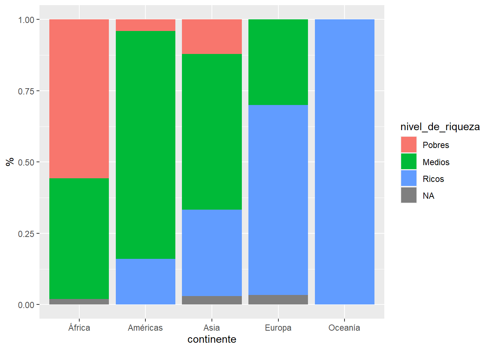

Capítol 10 Resumenes de agregados
R tiene muchas opciones para construir agregados.
10.1 Summary
Para tener una primera impresión sobre los datos utiliza summary().
paises07Summ <- paises07
paises07Summ$pais <- as.character(paises07Summ$pais)
paises07Summ$fecha <- as.Date(paste(paises07Summ$anio,"12","31",sep="-"),"%Y-%m-%d")
paises07Summ$es_grande <- paises07Summ$poblacion > 30*10^6
paises07Summ$pib_per_capita[c(34,70,108)] <- NA
kable(summary(paises07Summ[,c("pais","continente","pib_per_capita","es_grande","fecha"),]))| pais | continente | pib_per_capita | es_grande | fecha | |
|---|---|---|---|---|---|
| Length:142 | África :52 | Min. : 277.6 | Mode :logical | Min. :2007-12-31 | |
| Class :character | Américas:25 | 1st Qu.: 1708.3 | FALSE:106 | 1st Qu.:2007-12-31 | |
| Mode :character | Asia :33 | Median : 6223.4 | TRUE :36 | Median :2007-12-31 | |
| NA | Europa :30 | Mean :11750.2 | NA | Mean :2007-12-31 | |
| NA | Oceanía : 2 | 3rd Qu.:18008.7 | NA | 3rd Qu.:2007-12-31 | |
| NA | NA | Max. :49357.2 | NA | Max. :2007-12-31 | |
| NA | NA | NA’s :3 | NA | NA |
summary en factor y logic devuelve una tabla de frecuencias, en cambio en character no. En numericy Date devuelve 6 estadísticos básicos de resumen más el conteo de NAs.
10.1.1 Estadísticos basicos
Los 6 estadísticos básicos del summary son:
min(paises07Summ$pib_per_capita, na.rm=TRUE)## [1] 277.5519quantile(paises07Summ$pib_per_capita, 0.25, na.rm=TRUE)## 25%
## 1708.268median(paises07Summ$pib_per_capita, na.rm=TRUE)## [1] 6223.367mean(paises07Summ$pib_per_capita, na.rm=TRUE)## [1] 11750.22quantile(paises07Summ$pib_per_capita, 0.75, na.rm=TRUE)## 75%
## 18008.73max(paises07Summ$pib_per_capita, na.rm=TRUE)## [1] 49357.19El parámetro na.rm=TRUE evita que las funciones resumen, devuelvan un NA debido a la presencia de NA s en la variable pib_por_capita. Observa como esto sucede en la siguiente función.
mean(paises07Summ$pib_per_capita)## [1] NALa función quantile(), por sí sola, puede calcular todos los valores, excepto la media.
kable(quantile(paises07Summ$pib_per_capita, seq(0,1,1/4), na.rm=TRUE))| x | |
|---|---|
| 0% | 277.5519 |
| 25% | 1708.2679 |
| 50% | 6223.3675 |
| 75% | 18008.7268 |
| 100% | 49357.1902 |
10.2 Tablas de frecuencias
Para obtener una tabla de frecuencias, utiliza table(). Para una variable.
kable(table(paises07Summ$continente)) # una variable| Var1 | Freq |
|---|---|
| África | 52 |
| Américas | 25 |
| Asia | 33 |
| Europa | 30 |
| Oceanía | 2 |
Tablas cruzadas de dos o más variables.
kable(table(paises07Summ$continente,paises07Summ$es_grande))| FALSE | TRUE | |
|---|---|---|
| África | 42 | 10 |
| Américas | 19 | 6 |
| Asia | 20 | 13 |
| Europa | 23 | 7 |
| Oceanía | 2 | 0 |
Asia es el continente con mayor número de países grandes (de más de 30M de hab.).
En muchas ocasiones, es útil tramar las variables numéricas en intervalos. En R utiliza cut().
Vamos a crear la variable nivel de riqueza a partir del pib_per_capita cortando la variable por 1700$ y 18000$.
paises07Summ$nivel_de_riqueza <- cut(paises07Summ$pib_per_capita,
breaks=c(-Inf,1700,18000,Inf))kable(head(paises07Summ[,c("pais","pib_per_capita","nivel_de_riqueza")]))Para definir los
breaks, R permite utilizar-InfeInf(infinito) como si fueran números.
cut() crea un factor ordenado a partir de la variable numeric con los siguientes levels:
levels(paises07Summ$nivel_de_riqueza)## [1] "(-Inf,1.7e+03]" "(1.7e+03,1.8e+04]" "(1.8e+04, Inf]"Para modificar las etiquetas utiliza la misma función levels().
levels(paises07Summ$nivel_de_riqueza) <- c("Pobres","Medios","Ricos")Mostramos a continuación la distribución de países ricos y pobres por continente en 2007.
kable(table(paises07Summ$continente, paises07Summ$nivel_de_riqueza, useNA = "ifany"))| Pobres | Medios | Ricos | NA | |
|---|---|---|---|---|
| África | 29 | 22 | 0 | 1 |
| Américas | 1 | 20 | 4 | 0 |
| Asia | 4 | 18 | 10 | 1 |
| Europa | 0 | 9 | 20 | 1 |
| Oceanía | 0 | 0 | 2 | 0 |
Gráficamente.
ggplot(paises07Summ) +
geom_bar(aes(x=continente, fill=nivel_de_riqueza), position = "fill") +
labs(y="%")
Para definir el nivel de riqueza de los países en 2007 se ha realizado la siguiente transformación:
paises07$nivel_de_riqueza <- cut(paises07$pib_per_capita, breaks=c(-Inf,1700,18000,Inf))
levels(paises07$nivel_de_riqueza) <- c("Pobres","Medios","Ricos")10.3 Agregados por subgrupos
Además de frecuencias, es necesario saber calcular otros estadísticos básicos para subgrupo de un data frame. Por ejemplo, la media de esperanza de vida y del pib per cápita, así como, el total de población por continente y nivel de riqueza.
agg1 <- aggregate(paises07[,c("esperanza_de_vida","pib_per_capita")],
list(continente = paises07$continente
, nivel_de_riqueza=paises07$nivel_de_riqueza),mean)
agg2 <- aggregate(paises07[,c("poblacion"),drop=FALSE],
list(continente = paises07$continente
, nivel_de_riqueza=paises07$nivel_de_riqueza),sum)<recuerda>aggregate() permite calcular un mismo estadístico sobre varias variables segmentando por más de un eje.</recuerda>
Se juntan ahora los dos agregados con merge() y se genera la variable combinada continente_riqueza.
agg3 <- merge(agg1,agg2)
agg3$continente_riqueza <- paste(agg3$continente,agg3$nivel_de_riqueza,sep="-")
kable(agg3)| continente | nivel_de_riqueza | esperanza_de_vida | pib_per_capita | poblacion | continente_riqueza |
|---|---|---|---|---|---|
| África | Medios | 59.06305 | 6014.4232 | 454062366 | África-Medios |
| África | Pobres | 51.68423 | 943.7462 | 475477326 | África-Pobres |
| Américas | Medios | 73.59135 | 7863.3024 | 550839183 | Américas-Medios |
| Américas | Pobres | 60.91600 | 1201.6372 | 8502814 | Américas-Pobres |
| Américas | Ricos | 76.86500 | 29152.0266 | 339529187 | Américas-Ricos |
| Asia | Medios | 69.37822 | 4912.6469 | 3277982847 | Asia-Medios |
| Asia | Pobres | 60.20820 | 1198.8519 | 282303757 | Asia-Pobres |
| Asia | Ricos | 78.41910 | 31718.7983 | 251667223 | Asia-Ricos |
| Europa | Medios | 74.26544 | 10264.4946 | 162756836 | Europa-Medios |
| Europa | Ricos | 79.09852 | 31393.0475 | 423341693 | Europa-Ricos |
| Oceanía | Ricos | 80.71950 | 29810.1883 | 24549947 | Oceanía-Ricos |
El mismo gráfico visto para países, ahora, agregado a nivel de continente y riqueza.
ggplot(agg3, aes(x=pib_per_capita
, y=esperanza_de_vida
, label=continente_riqueza
, color =continente
, size=poblacion)) +
geom_point() +
geom_label_repel(size=3, force=10) +
scale_x_log10() +
labs(title="Continentes-riqueza en 2007 (no ponderado)")Figura 10.1: Contienentes (Fuente: Elaboración propia, datos de Gapminder)
10.4 La familia apply
Como se ha comentado, las funciones apply permiten vectorizar las operaciones de forma eficiente, sin utilizar bucles for().
tapply
Es una alternativa a aggregate() para aplicar una función de agregación sobre una única variable y segmentando por un único eje.
tapply(paises07$esperanza_de_vida,paises07$continente,quantile,probs=0.25)## África Américas Asia Europa Oceanía
## 47.83400 71.75200 65.48300 75.02975 80.46175lapply
Permite aplicar una función sobre cada elemento de un vector o lista. Devuelve una lista.
lapply(paises07[,-1], function(x) summary(x))## $continente
## África Américas Asia Europa Oceanía
## 52 25 33 30 2
##
## $anio
## Min. 1st Qu. Median Mean 3rd Qu. Max.
## 2007 2007 2007 2007 2007 2007
##
## $esperanza_de_vida
## Min. 1st Qu. Median Mean 3rd Qu. Max.
## 39.61 57.16 71.94 67.01 76.41 82.60
##
## $poblacion
## Min. 1st Qu. Median Mean 3rd Qu. Max.
## 1.996e+05 4.508e+06 1.052e+07 4.402e+07 3.121e+07 1.319e+09
##
## $pib_per_capita
## Min. 1st Qu. Median Mean 3rd Qu. Max.
## 277.6 1624.8 6124.4 11680.1 18008.8 49357.2
##
## $nivel_de_riqueza
## Pobres Medios Ricos
## 36 69 37sapply
Misma funcionalidad que lapply, pero simplificando el resultado a vector cuando es posible.
sapply(paises07, function(x) class(x))## pais continente anio esperanza_de_vida
## "factor" "factor" "integer" "numeric"
## poblacion pib_per_capita nivel_de_riqueza
## "integer" "numeric" "factor"apply
Calcula agregados sobre cada una de los vectores marginas fila (MARGIN = 1), alternativamente columna (MARGIN = 2) de una matriz.
a <- matrix(1:10,ncol=2)
apply(a,MARGIN = 1,sum)## [1] 7 9 11 13 15Columnas,
a <- matrix(1:10,ncol=2)
apply(a,2,sum)## [1] 15 40